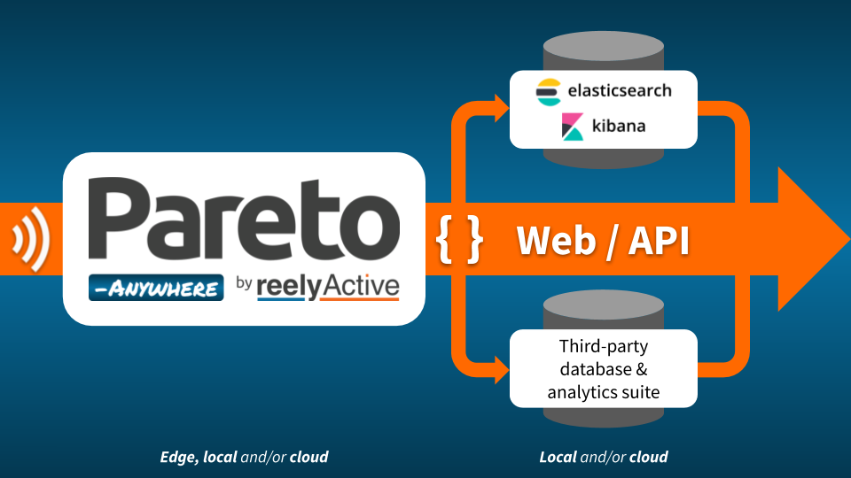

Personnel Tracking
Locate personnel, visitors or other occupants in real-time and/or analyse their journeys through physical spaces.
How does this work?
Personnel are identified and located by a beacon they carry
- Plug-and-play infrastructure is deployed
- Personnel carry a Bluetooth Low Energy beacon badge or wearable
- Pareto Anywhere open source software processes and relays the real-time data stream
- Real-time personnel location is accessible through Pareto Anywhere web apps and APIs
- Data is stored in Elasticsearch* or any other database
- Data is analysed in Kibana* or any other analytics software
* Pareto Anywhere the open source Elastic Stack

Success Stories
From those who use Pareto Anywhere for personnel tracking
We're now able to automatically collect personnel journeys in challenging environments, even for studies as short as a few days.
Having all speakers tagged and then being able to simply browse a web page to see where they were on site, was nothing short of miraculous!
Extend the power of the web to physical applications
Learn more about the complementary use cases. Let our sales team know which matter most to you.